Git
Стажировка HTML5
Дмитрий Мещеряков
Системы контроля версий
Система контроля версий (СКВ) — это система, регистрирующая изменения в одном или нескольких файлах с тем, чтобы в дальнейшем была возможность вернуться к определённым старым версиям этих файлов.
СКВ дает возможность:
- возвращать отдельные файлы к прежнему виду;
- возвращать к прежнему состоянию весь проект;
- просматривать происходящие со временем изменения;
- определять, кто последним вносил изменения во внезапно переставший работать модуль, кто и когда внёс в код какую-то ошибку, и многое другое.
Виды СКВ:
- Локальные - все изменения файлов хранятся в базе данных на локальном компьютере. Проблема: данные легко потерять, если сломается локальный компьютер.
- Централизованные - в таких системах есть центральный сервер, на котором хранятся все файлы под версионным контролем, и ряд клиентов, которые получают копии файлов из него. Проблема: данные легко потерять, если сломается сервер.
- Распределенные (Git, Mercurial, Bazaar) - клиенты не просто выгружают последние версии файлов, а полностью копируют весь репозиторий. Поэтому в случае, когда "умирает" сервер, через который шла работа, любой клиентский репозиторий может быть скопирован обратно на сервер, чтобы восстановить базу данных. Каждый раз, когда клиент забирает свежую версию файлов, он создаёт себе полную копию всех данных.
Виды СКВ:
- Локальные;
- Централизованные;
- Распределенные (Git, Mercurial, Bazaar).
Git. Основные особенности
На данный момент, фактически, Git - самая распространенная СКВ. Появился в 2005 году, создатели - разработчики Linux (в частности, основатель Linux Линус Торвальдс).
Основные особенности Git:
- Слепки вместо патчей.
- Почти все операции - локальные. Плюсы: быстрота, возможность работать без интернета (сохранил изменения локально, а затем отправил их на сервер, когда появилась сеть).
- Чаще всего данные в Git только добавляются. Очень сложно заставить систему удалить данные или сделать что-то неотменяемое. Можно, как и в любой другой СКВ, потерять данные, которые вы ещё не сохранили, но как только они зафиксированы, их очень сложно потерять, особенно если вы регулярно отправляете изменения в другой репозиторий.
Основные особенности Git:
- Слепки вместо патчей.
- Почти все операции - локальные.
- Очень сложно заставить систему удалить данные или сделать что-то неотменяемое.
Хранение данных в Git
Главное отличие Git'а от любых других СКВ (например, Subversion и ей подобных) — это то, как Git смотрит на свои данные. В принципе, большинство других систем хранит информацию как список изменений (патчей) для файлов. Эти системы (CVS, Subversion, Perforce, Bazaar и другие) относятся к хранимым данным как к набору файлов и изменений, сделанных для каждого из этих файлов во времени, как показано на рисунке 1.
Другие СКВ
Git не хранит свои данные в таком виде. Вместо этого Git считает хранимые данные набором слепков небольшой файловой системы. Каждый раз, когда вы фиксируете текущую версию проекта, Git, по сути, сохраняет слепок того, как выглядят все файлы проекта на текущий момент. Ради эффективности, если файл не менялся, Git не сохраняет файл снова, а делает ссылку на ранее сохранённый файл. То, как Git подходит к хранению данных, похоже на рисунок 2.
Git

Установка и первоначальная настройка Git
Git для Windows: https://git-for-windows.github.io/
После установки у вас будет как консольная версия, так и графическая.
Консоль можно открыть в любом месте в проводнике : правая кнопка - Git Bash Here
Первое, что вам следует сделать после установки Git'а, — указать ваше имя и адрес электронной почты. Это важно, потому что каждый коммит в Git'е содержит эту информацию, и она включена в коммиты, передаваемые вами.
git config --global user.name "Name Surname"git config --global user.email email@example.comЕсли указана опция --global, то эти настройки достаточно сделать только один раз, поскольку в этом случае Git будет использовать эти данные для всего, что вы делаете в этой системе. Если для каких-то отдельных проектов вы хотите указать другое имя или электронную почту, можно выполнить эту же команду без параметра --global в каталоге с нужным проектом.
Для изменения размера текста нужно щелкнуть правой кнопкой мыши по логотипу Git Bash в верхнем левом углу и выбрать пункт Options:
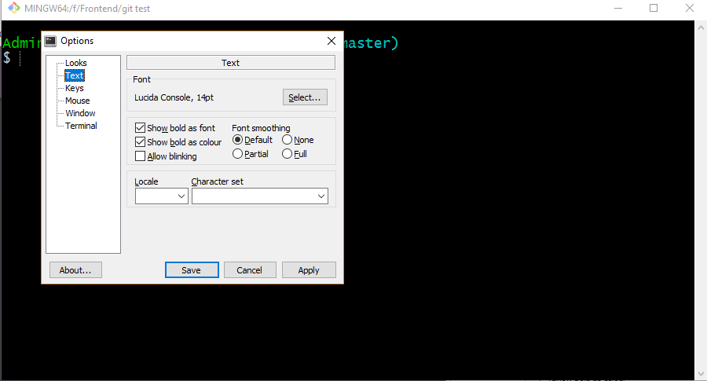Создание Git-репозитория
Репозиторий - это проектная папка, в которой хранятся все документы вместе с историей их изменения и другой служебной информацией.
2 способа создать репозиторий:
- импорт в Git уже существующего проекта;
- клонирование существующего репозитория с сервера.
Импорт в Git уже существующего проекта
Если вы собираетесь начать использовать Git для существующего проекта, то вам необходимо перейти в проектный каталог и в командной строке ввести
git initЭта команда создаёт в текущем каталоге новый подкаталог с именем .git содержащий все необходимые файлы репозитория — основу Git-репозитория. На этом этапе ваш проект ещё не находится под версионным контролем
Клонирование существующего репозитория с сервера
Если вы желаете получить копию существующего репозитория Git, например, проекта, в котором вы хотите поучаствовать, то вам нужна команда
git clone [url]git clone https://github.com/jquery/jquery.gitЭта команда создаёт каталог с именем jquery, инициализирует в нём каталог .git, скачивает все данные для этого репозитория и создаёт (checks out) рабочую копию последней версии. Если вы зайдёте в новый каталог jquery, вы увидите в нём проектные файлы, пригодные для работы и использования.
В Git'е реализовано несколько транспортных протоколов, которые вы можете использовать. Наиболее используемые: https и ssh.
Состояния файлов
Каждый файл в вашем рабочем каталоге может находиться в одном из двух состояний:
- под версионным контролем (отслеживаемые, tracked);
- не под версионным контролем (неотслеживаемые, untracked).
Отслеживаемые файлы — это те файлы, которые были в последнем слепке состояния проекта (snapshot); они могут быть:
- неизменёнными (unmodified);
- изменёнными (modified)
- подготовленными к коммиту (staged)
Неотслеживаемые файлы — это всё остальное, любые файлы в вашем рабочем каталоге, которые не входили в ваш последний слепок состояния и не подготовлены к коммиту.
Состояния файлов
Когда вы впервые клонируете репозиторий, все файлы будут отслеживаемыми и неизменёнными, потому что вы только взяли их из хранилища (checked them out) и ничего пока не редактировали.

Отслеживание состояния файлов
Для того чтобы посмотреть текущее состояние рабочего каталога, используется команда
git statusПосле создания файла index.html рабочий каталог выглядит так:
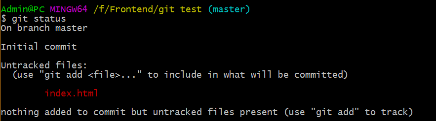Отслеживание новых файлов
Для того чтобы начать отслеживать (добавить под версионный контроль) новый файл, используется команда
git add Название файлаПосле добавления файла index.html под версионный контроль рабочий каталог выглядит так:
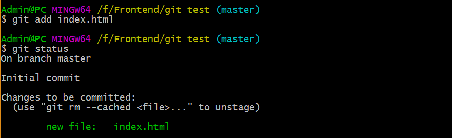Индексация отслеживаемых файлов
Если внести изменения в отслеживаемый файл, то он окажется в секции "Changes not staged for commit" - это означает, что отслеживаемый файл был изменён в рабочем каталоге, но пока не проиндексирован. Чтобы проиндексировать его, необходимо также выполнить команду
Чтобы проиндексировать файл, необходимо выполнить команду
git add Название файлаПолезные команды
Добавить в индекс все измененные, удаленые, неотслеживаемые файлы:
git add .Добавить в индекс все измененные и удаленые файлы:
git add -uПри изменении отслеживаемого файла index.html рабочий каталог выглядит так:
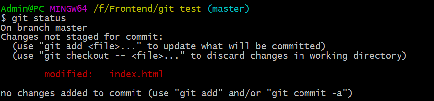После выполнения команды git add index.html:
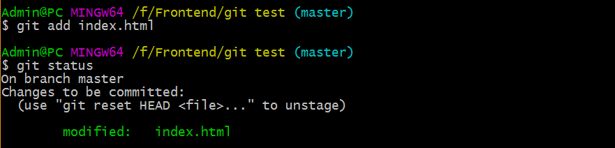Фиксация изменений
Когда ваш индекс настроен так, как вам и хотелось, вы можете зафиксировать свои изменения. Запомните, всё, что до сих пор не проиндексировано — любые файлы, созданные или изменённые вами, и для которых вы не выполнили git add после момента редактирования — не войдут в этот коммит. Они останутся изменёнными файлами на вашем диске.
Для фиксации изменений используется команда
git commitЭта команда откроет текстовый редактор (по умолчанию Vim), в котором нужно будет ввести сообщение коммита.
Работать в этом редакторе неудобно, проще вводить сообщение коммита прямо в консоли при помощи команды
Ввести сообщение коммита прямо в консоли:
git commit -m Название коммитаСтарайтесь давать осмысленные названия коммитам (что конкретно было сделано, например “Верстка хедера” (лучше по-английски в повелительном наклонении “Add header styles”). Сам Гит использует повелительное наклонение (это видно при слиянии веток).
Старайтесь делать более мелкие коммиты (атомарные). Это позволит в дальнейшем проще смотреть на историю разработки.
Примеры плохих названий коммитов:
- Commit 159;
- 2017-01-13 23:59;
- (╯°□°)╯︵ ┻━┻
Примеры хороших названий коммитов:
- Add base styles;
- Fix login form;
- Refactor main page grid.
После выполнения команды git commit -m "Add index.html":
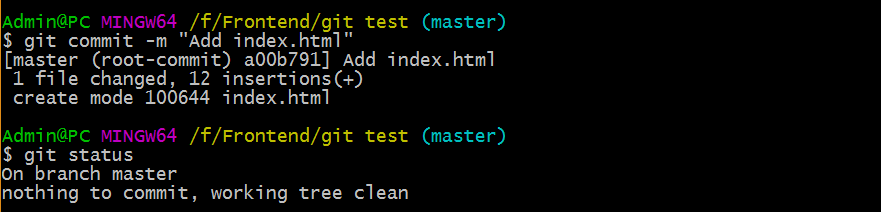Можно сразу фиксировать изменения без дополнительной индексации файлов (git add):
git commit -a -m Название коммитаУдаление файлов
Для того чтобы удалить файл из Git'а, вам необходимо удалить его из отслеживаемых файлов (точнее, удалить его из вашего индекса), а затем выполнить коммит. Это позволяет сделать команда git rm, которая также удаляет файл из вашего рабочего каталога, так что вы в следующий раз не увидите его как "неотслеживаемый".
git rm Название файлаПосле выполнения команды git rm index.html:
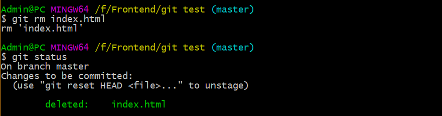Игнорирование файлов
Зачастую, у вас имеется группа файлов, которые вы не только не хотите автоматически добавлять в репозиторий, но и видеть в списках неотслеживаемых.
Файлы, которые должны быть неотслеживаемыми:
- Макеты;
- Сторонние библиотеки;
- Сбилденные файлы (для production).
Для добавления файлов в список неотслеживаемых в корне проектного каталога создается файл .gitignore с перечислением шаблонов, соответствующих таким файлам.
Пример файла .gitignore:
assets
node_modules
build
Просмотр изменений
Для детального просмотра изменений используется команда
git diffОна показывает непосредственно добавленные и удалённые строки в еще непроиндексированных файлах.
Для просмотра изменений в проиндексированных файлах используется команда
git diff --stagedПосле выполнения команды git diff:
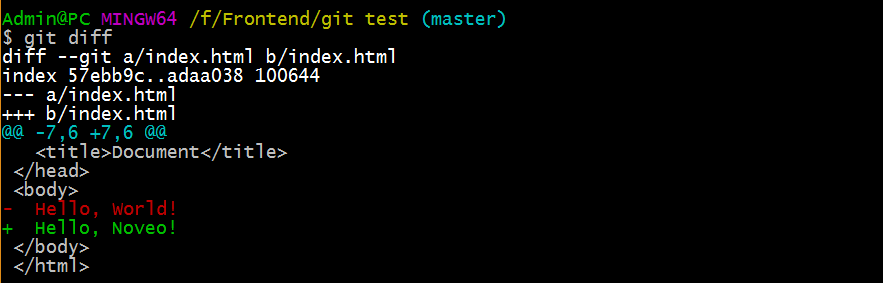Просмотр истории коммитов
Для просмотра истории коммитов используется команда
git logДля выхода из просмотра нужно нажать Ctrl + C.
После выполнения команды git log:
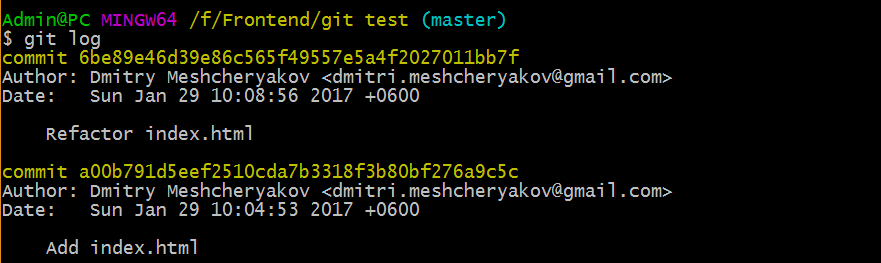Отмена изменений
Отмена изменений в файлах
Отмена изменений в файле с момента последнего коммита:
git checkout Название файлаОтмена изменений во всех файлах:
git checkout .Отмена добавления файлов в индекс (отмена команды git add):
git reset HEADОтмена коммитов
Добавление к последнему коммиту новых изменений:
git commit -a --amendОтмена последнего коммита (изменения в файлах сохранятся):
git reset --soft HEAD^Удаление коммита (вместе с изменениями в файлах):
git reset --hard HEAD^Основы ветвления
Ветвление означает, что вы отклоняетесь от основной линии разработки и продолжаете работу, не вмешиваясь в основную линию.
Для наглядности давайте предположим, что у вас есть каталог, содержащий три файла, и вы хотите добавить их все в индекс и сделать коммит. При добавлении файлов в индекс для каждого из них вычислится контрольная сумма, затем эти версии файлов будут сохранены в Git-репозиторий (Git обращается к ним как к двоичным данным), а их контрольные суммы добавятся в индекс
git add README test.rb LICENSEgit commit -m 'initial commit'Когда вы создаёте коммит, выполняя git commit, Git вычисляет контрольную сумму каждого подкаталога (в нашем случае только корневого каталога) и сохраняет эти объекты-деревья в Git-репозиторий. Затем Git создаёт объект для коммита, в котором есть метаданные и указатель на объект-дерево для корня проекта. Таким образом, Git сможет воссоздать текущее состояние, когда будет нужно.
Ваш Git-репозиторий теперь содержит пять объектов: по одному блобу для содержимого каждого из трёх файлов, одно дерево, в котором перечислено содержимое каталога и определено соответствие имён файлов и блобов, и один коммит с указателем на тот самый объект-дерево для корня и со всеми метаданными коммита. Схематично данные в этом Git-репозитории выглядят так, как показано на рисунке 4.
Пример: репозиторий с тремя файлами. Делаем коммит. Схематично данные в этом репозитории выглядят так, как показано на рисунке 4.
git add README test.rb LICENSEgit commit -m 'initial commit'
Основы ветвления
Если вы сделаете некоторые изменения и создадите новый коммит, то следующий коммит сохранит указатель на коммит, который шёл непосредственно перед ним. После следующих двух коммитов история может выглядеть, как на рисунке 5.
После следующих двух коммитов история будет выглядеть так:

Ветка в Git'е — это просто легковесный подвижный указатель на один из этих коммитов. Ветка по умолчанию в Git'е называется master. Когда вы создаёте коммиты на начальном этапе, вам дана ветка master, указывающая на последний сделанный коммит. При каждом новом коммите она сдвигается вперёд автоматически (рисунок 6).

Основы ветвления
При создании новой ветки вы создаете новый указатель, который можно будет перемещать. Для создания новой ветки используется команда:
git branch Название веткиСоздадим новую ветку testing:
git branch testingЭта команда создаст новый указатель на тот самый коммит, на котором вы сейчас находитесь (рисунок 7).
Основы ветвления
Откуда Git узнает, на какой ветке вы находитесь в данный момент? Он хранит специальный указатель, который называется HEAD (верхушка). В данный момент вы всё ещё на ветке master. Команда git branch только создала новую ветку, она не переключила вас на неё (рисунок 8).
Основы ветвления
Чтобы перейти на существующую ветку:
git checkout testing
Чтобы создать ветку и сразу же перейти на неё:
git checkout -b Название веткиОсновы ветвления
Если сделать коммит в ветке testing, то ветка testing передвинется вперёд, но ветка master всё ещё будет указывать на коммит, на котором вы были, когда выполняли git checkout, чтобы переключить ветки (рисунок 10).
Сделаем коммит в ветке testing (рисунок 10).

Выполним команду
git checkout masterЭта команда выполнила два действия. Она передвинула указатель HEAD назад на ветку master и вернула файлы в вашем рабочем каталоге назад, в соответствие со снимком состояния, на который указывает master. Это также означает, что изменения, которые вы делаете, начиная с этого момента, будут ответвляться от старой версии проекта. Это, по сути, откатывает изменения, которые вы временно делали на ветке testing, так что дальше вы можете двигаться в другом направлении (рисунок 11).

Основы ветвления
Если теперь сделать коммит в ветке master, то история проекта разветвится (рисунок 12). Вы создали новую ветку, перешли на неё, поработали на ней немного, переключились обратно на основную ветку и выполнили другую работу. Оба эти изменения изолированы в отдельных ветках: вы можете переключаться туда и обратно между ветками и слить их, когда будете готовы.
Сделаем коммит в ветке master (рисунок 12).

Для просмотра всех веток в репозитории используется команда
git branchТекущая ветка подсвечена и отмечена символом *.
Слияние веток. Подход к работе с ветками
Слияние веток
1 Переключиться в ветку, в которую вы хотите влить изменения:
git checkout master2 Влить изменения из нужной ветки:
git merge testingПодход к работе с ветками:
- Ветка master - стабильный код (готовый для production).
- Ветка develop - для разработки и тестирования (может не быть стабильной постоянно), в стабильные моменты вливается в master.
- Тематические ветки для конкретных задач, например, issue54, fix_bug_in_footer - после завершения работы эти ветки вливаются в develop и удаляются командой git branch -d имя_ветки.
Конфликты при слиянии веток
Если вы изменили одну и ту же часть файла по-разному в двух ветках, которые собираетесь слить, Git не сможет сделать это чисто.
Предположим, в ветке master вы добавили в файл index.html строку I'm Vasya!, а в ветке testing - строку I'm Peter!
При попытке выполнить команду git merge testing в ветке master возникнет конфликт слияния:
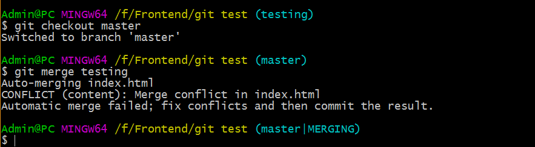Git не создал новый коммит для слияния. Он приостановил этот процесс до тех пор, пока вы не разрешите конфликт. Если вы хотите посмотреть, какие файлы не прошли слияние (на любом этапе после возникновения конфликта), выполните команду git status.
Посмотреть какие файлы не прошли слияние:
git statusКонфликты при слиянии веток
Всё, что имеет отношение к конфликту слияния и что не было разрешено, отмечено как unmerged. Git добавляет стандартные маркеры к файлам, которые имеют конфликт, так что вы можете открыть их вручную и разрешить эти конфликты. Файл содержит секцию, которая выглядит примерно так:
При конфликте слияния файл содержит секцию, которая выглядит так:
В верхней части блока (всё, что выше =======) это версия из HEAD (ветки master, так как именно на неё вы перешли перед выполнением команды merge), всё, что находится в нижней части — версия в testing. Чтобы разрешить конфликт, вы должны либо выбрать одну из этих частей, либо как-то объединить содержимое по своему усмотрению.
Всё, что выше ======= - версия в master, что ниже - версия в testing.
Выберем вариант из ветки testing:
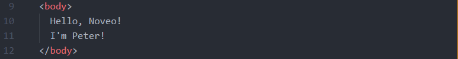После разрешения конфликта нужно добавить файл в индекс:
git add index.htmlИ зафиксировать изменения:
git commit -m 'Merge branch testing'Работа с удаленными репозиториями
Удалённые ветки — это ссылки на состояние веток в ваших удалённых репозиториях. Это локальные ветки, которые нельзя перемещать; они двигаются автоматически всякий раз, когда вы осуществляете связь по сети.
Они выглядят как (имя удал. репоз.)/(ветка).
По умолчанию Git называет удаленный репозиторий origin.
Рассмотрим пример. Скажем, у вас в сети есть свой Git-сервер на git.ourcompany.com. Если вы с него что-то склонируете (git clone), Git автоматически назовёт его origin, заберёт оттуда все данные, создаст указатель на то, на что там указывает ветка master, и назовёт его локально origin/master (но вы не можете его двигать). Git также сделает вам вашу собственную ветку master, которая будет начинаться там же, где и ветка master в origin, так что вам будет с чем работать (рисунок 13).
Рассмотрим пример. Склонируем репозиторий с Git-сервера (рисунок 13).

Работа с удаленными репозиториями
Если вы сделаете что-то в своей локальной ветке master, а тем временем кто-то ещё отправит изменения на git.ourcompany.com и обновит там ветку master, то ваши истории продолжатся по-разному (рисунок 14).

Для синхронизации вашей работы выполняется команда
git fetch originЭта команда ищет, какому серверу соответствует origin (в нашем случае это git.ourcompany.com); извлекает оттуда все данные, которых у вас ещё нет, и обновляет ваше локальное хранилище данных; сдвигает указатель origin/master на новую позицию (рисунок 15).
Команда git fetch origin связывается с указанным удалённым проектом и забирает все те данные проекта, которых у вас ещё нет. После того как вы выполнили команду, у вас должны появиться ссылки на все ветки из этого удалённого проекта.
Важно отметить, что команда fetch забирает данные в ваш локальный репозиторий, но не сливает их с какими-либо вашими наработками и не модифицирует то, над чем вы работаете в данный момент. Вам необходимо вручную слить эти данные с вашими, когда вы будете готовы (команда git merge).
Получение данных и отправка изменений
Получение данных (git pull)
Если у вас есть ветка, настроенная на отслеживание удалённой ветки, то вы можете использовать команду git pull. Она автоматически извлекает и затем сливает данные из удалённой ветки в вашу текущую ветку. Этот способ может для вас оказаться более простым или более удобным. К тому же по умолчанию команда git clone автоматически настраивает вашу локальную ветку master на отслеживание удалённой ветки master на сервере, с которого вы клонировали (подразумевается, что на удалённом сервере есть ветка master).
Выполнение git pull, как правило, извлекает (fetch) данные с сервера, с которого вы изначально склонировали, и автоматически пытается слить (merge) их с кодом, над которым вы в данный момент работаете.
Отправка изменений на сервер (git push)
git push [удал. сервер] [ветка]Когда вы хотите поделиться своими наработками, вам необходимо отправить (push) их в главный репозиторий. Чтобы отправить вашу ветку master на сервер origin, вы можете выполнить следующую команду для отправки наработок на сервер:
Чтобы отправить вашу ветку master на сервер origin:
git push origin masterЭта команда срабатывает только в случае, если вы клонировали с сервера, на котором у вас есть права на запись, и если никто другой с тех пор не выполнял команду push. Если вы и кто-то ещё одновременно клонируете, затем он выполняет команду push, а затем команду push выполняете вы, то ваш push точно будет отклонён. Вам придётся сначала вытянуть (pull) их изменения и объединить с вашими. Только после этого вам будет позволено выполнить push.
Если вы создали новую ветку локально, то при первом пуше на сервер указываем origin и название ветки:
git push origin new-branchПри следующих пушах уже можно просто писать git push (git автоматически связывает локальную и удаленную ветки).
Процесс работы с Git
Находясь на ветке master, получаем изменения с сервера:
git pullПереключаемся на новую ветку для решения конкретной задачи:
git checkout -b 'Название ветки'Индексируем изменения во всех файлах:
git add .Фиксируем изменения:
git commit -m 'Название коммита'Отправляем изменения в удаленный репозиторий:
git push origin 'Название ветки'Регистрация на GitLab
Порядок регистрации
- Зарегистрироваться на https://gitlab.school.noveogroup.com/
- Создать новый проект под названием username-HTML2017: https://gitlab.school.noveogroup.com/projects/new
- Отредактировать файл readme.md
- Добавить проект в группу HTML
Генерация SSH-ключа
SSH позволяет устанавливать защищенное подключение между вашим компьютером и GitLab. Не нужно будет при каждом пулле и пуше вводить логин и пароль.
Порядок генерации SSH-ключа
Зайти в настройках профиля на вкладку SSH keys
Ввести в консоли команду:
ssh-keygen -t rsa -C 'your_email'Вывести SSH-ключ в консоль и скопировать:
cat ~/.ssh/id_rsa.pub | clipВставить скопированное значение в поле Key, ввести Title (Work) и нажать Add key.
Тестовое задание
- Склонировать свой проект.
- Создать ветку test-task.
- Изменить файл readme.
- Запушить изменения в ветку test-task.